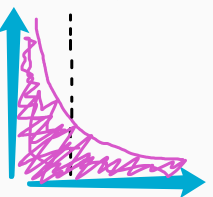
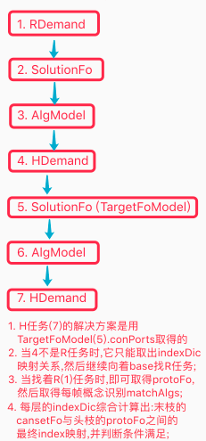
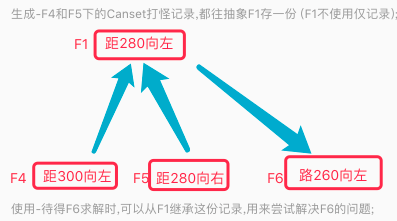

AI系列之《2022.12-2023.02：条件满足与竞争机制》

来源：HELIX_THEORY/手稿/assets/660_识别竞争机制示图.png

来源：HELIX_THEORY/手稿/assets/665_H任务前段条件满足判断方法示图.png

来源：HELIX_THEORY/手稿/assets/676_Canset的迁移流程简图.png
来源：Note28.md
这一阶段围绕 Canset 前段条件满足、识别越来越准、S 竞争越来越准、过滤器、排名器和连续飞躲展开。
条件满足关注方案的前置条件：一个 Canset 不是在任何场景都能执行，它必须先判断当前局面是否满足其前段要求。随后，S 竞争越来越准把问题推进到“中段、后段和整体评价如何协同”。
过滤器与排名器的组合，是竞争机制的明确化：先排除明显不合适的，再在可行候选中排序。连续飞躲的跑通，则说明系统能把多帧、多步、持续变化的场景纳入行动闭环。